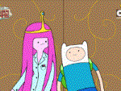
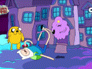

1화: 공포의 잠옷파티(Slumber Party Panic)

버블검 공주가 과학의 힘으로 캔디 왕국의 백성들을 살리려다 캔디를 좀비로 만들어 버렸다. 핀은 여러 재치를 통해 살아있는 캔디들을 구한다.
어드벤처 타임 최초의 에피소드인데 여러 캐릭터들의 특성을 잘 알아볼 수 있었다. 핀은 수학은 잘 못하지만 머리를 잘 굴리고 정의감이 넘치는 활기 넘치는 소년, 노란색 개 제이크는 핀과 아주 친한 친구, 버블검 공주는 과학을 좋아하고 캔디 왕국을 잘 돌보아 주는 인물임을 알 수 있다.
언뜻 보면 잔인해 보이는 장면을 유쾌하고 동화 같이 둥글둥글한 캐릭터 디자인으로 덮어 놓은 것 또한 어드벤처 타임의 특징이기도 하다. 좀비를 때려 눕혔는데 몸 안에서 여러 사탕들이 나오지 않는가.
이런 황당한 배경 속에서의 앞으로의 핀과 제이크의 멋있는 모험이 기대된다.
별점: 3.5/5
마지막 수정 날짜: 2026-08-09
리뷰 생성 날짜: 2026-08-09
2화: 울룩불룩 해독제(Troubles in Lumpy Space)

핀과 제이크, 버블검 공주와 울룩불룩 공주는 티 파티를 하다 그만 울룩불룩 공주가 제이크의 다리를 깨물어 제이크가 울룩불룩해지는 사건이 일어나고 만다.
이를 막기 위한 해독제를 구하기 위해 울룩불룩 왕국으로 떠난다. 중간에 일어나는 여러 사건, 특히 울룩불룩 공주의 거친 성격 때문에 방해를 받은 핀은 결국 제이크가 울룩불룩해지는 것을 보아야만 했다.
핀은 제이크가 간 곳에 안전하게 착지하기 위해 옆에 있던 껄렁이에게 일부러 물려 똑같이 울룩불룩해지고, 결국 둘이 해독제에 ‘앉아서’ 원래대로 돌아갈 수 있었다.
여러 애니메이션의 이야기 구성 방식과 비슷하게, 우연적인 사건(울룩불룩 공주가 제이크의 다리를 깨문다)으로 인해 사건이 진행된다.
울룩불룩 공주 특유의 성격으로 인해 난항이 생긴 것은 약간은 기분 나쁘게 느껴지긴 했지만, 핀이 친구를 생각하는 마음이 강해 결국에 사건이 완만히 해결되어 다행이다.
별점: 3/5
마지막 수정 날짜: 2026-08-09
리뷰 생성 날짜: 2026-08-09
4화: 코가손 할머니의 모험(Tree Trunks)
마지막 장면에서의 코가손 할머니가 사과를 깨물다 갑자기 사라지는 장면은 아무래도 충격적인 효과를 유도한 것이겠지만 내가 봤을 때는 그저 당황스럽고 어이없기만 하다.
별점 2.5/5
마지막 수정 날짜: 2026-08-11
리뷰 생성 날짜: 2026-08-11
추가 예정...